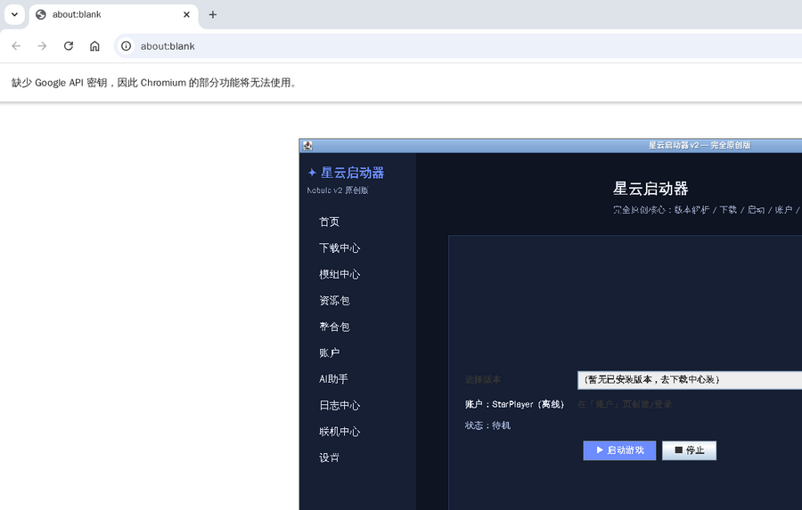
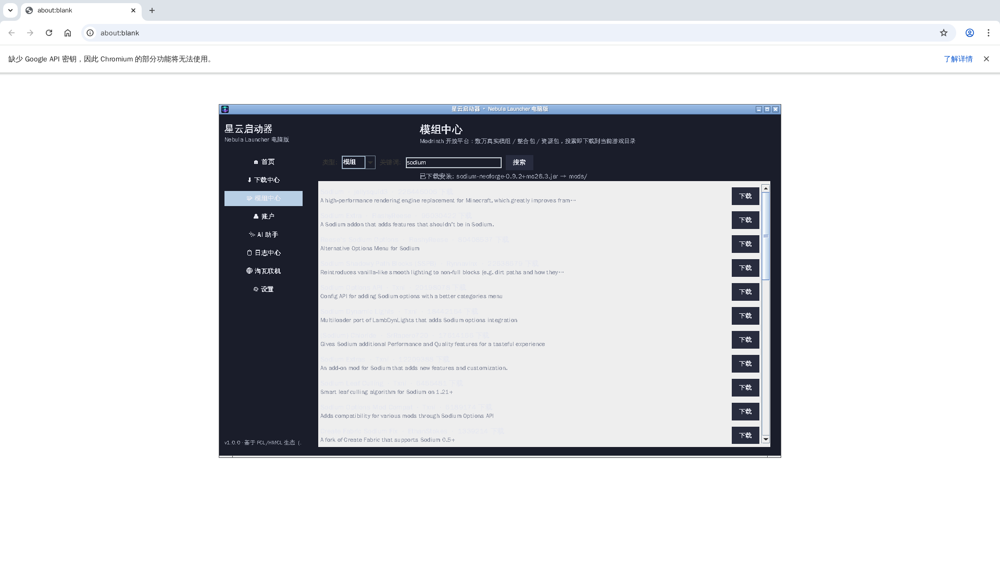
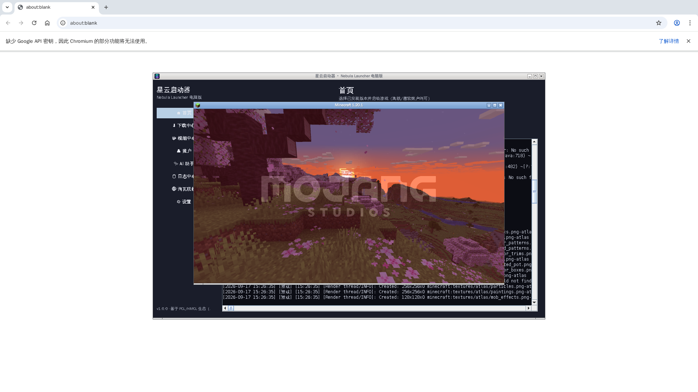
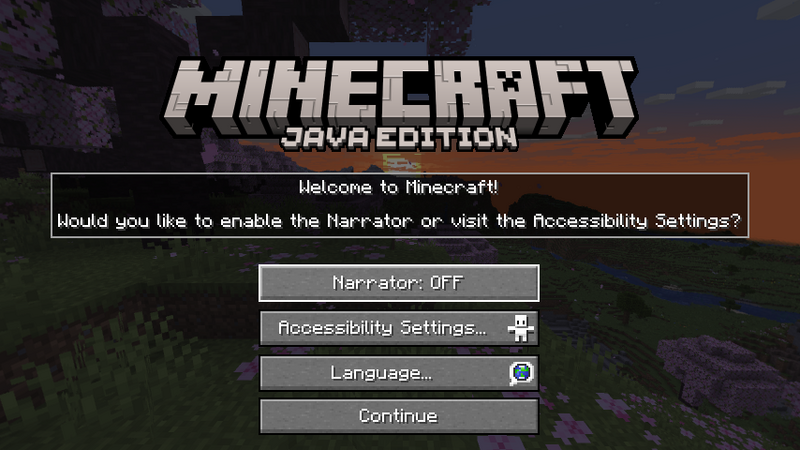
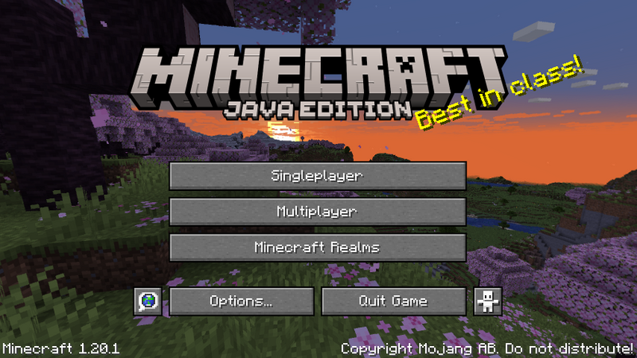
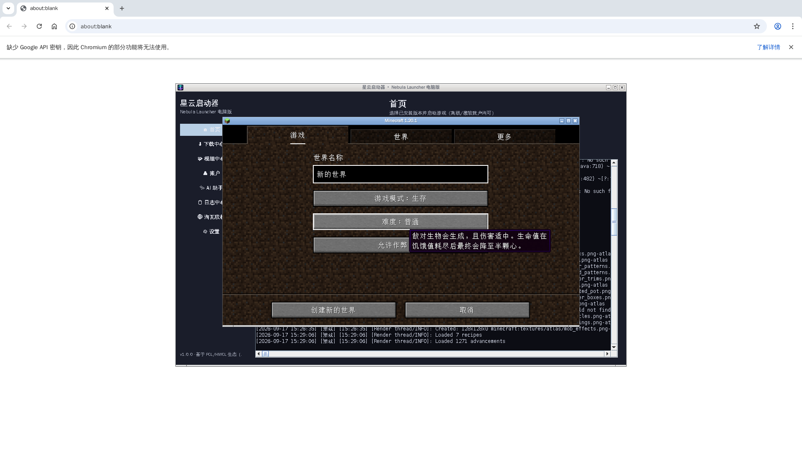
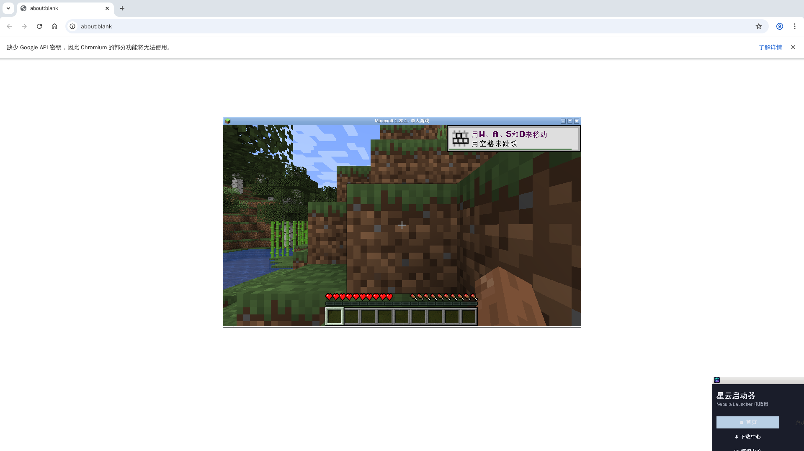
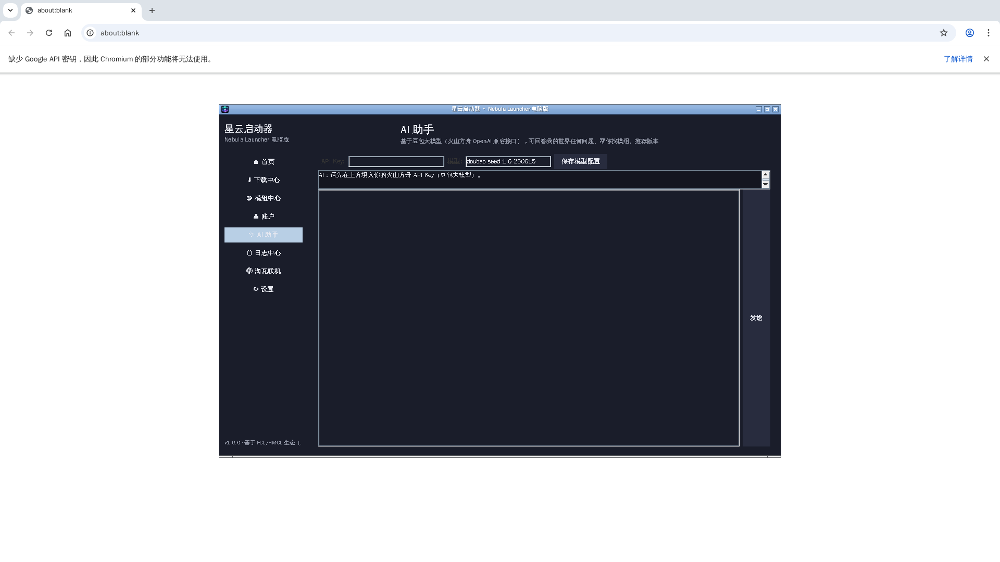

界面、下载、账户、模组、整合包、AI —— 全部自己写的原创核心
全新工程、全新代码库。版本解析、依赖下载、启动参数、配置存储、JSON/HTTP 工具全部自研，不引用任何第三方启动器源码。
接入 Mojang 官方版本清单，正式版 / 快照 / 远古版全覆盖，支持官方源与 BMCLAPI 国内镜像切换。
Modrinth 真实数据：模组、资源包、整合包三类中心，图标 + 简洁名 + 下载量，一键装进对应目录。
自研 .mrpack 解析器：自动解压、解析依赖、下载模组、应用 overrides 配置，导入即玩。
离线账户确定性 UUID；微软设备码全流程（XBL→XSTS→Minecraft 登录），启动器不接触账号密码。
火山方舟豆包大模型深度问答；未配置 Key 自动启用离线知识库，安全红线：不回答账号密码、不透露日志内容。
以下全部为星云启动器真实运行截图（无任何修饰与 AI 水印）








core（纯 Java 17）· desktop（Swing 自绘 UI）· android（Pojav 运行时 + 自研界面）
电脑版 · 安卓版均已就绪（星云自有版本）
macOS：直接使用 nebula-v2.jar（`java -jar nebula-v2.jar`），核心与 Windows/Linux 完全一致。
首次启动会自动创建游戏目录；下载源可在设置里切换官方 / BMCLAPI 镜像。GPL-v3 · 独立原创工程
以下不是星云启动器，是别人做的项目，仅作收录下载，与星云无关
作者 mrshell。界面/下载/账户/模组功能完整，但 iOS 侧缺少 LWJGL、GLFW、OpenAL 与 JIT 链路，当前无法真实启动游戏，属测试状态。不是星云的产品，出问题请找原作者。
下载 PiLauncher IPA（第三方 · 测试）